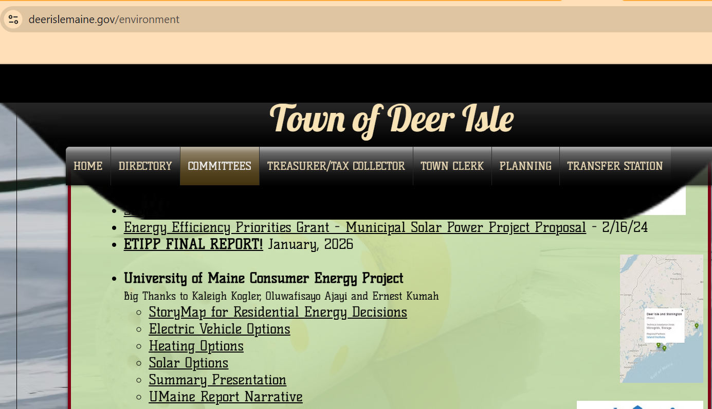

News
Oluwafisayo Ajayi wins U.S. institution awards for research excellence
BusinessDay featured my recognition for research excellence and academic achievement.
Read Article
University of Maine Consumer Energy Project Featured by the Town of Deer Isle
The Town of Deer Isle listed the University of Maine Consumer Energy Project on its environment page. The project, completed with Kaleigh Kogler and Ernest Kumah, includes resources on residential energy decisions, electric vehicle options, heating options, solar options, and a summary presentation.
View Feature